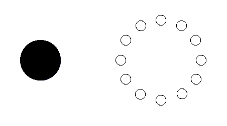
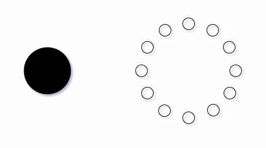

oggetto SIMPLEBUTTON
1 - TOGGLE
Crea un algoritmo che, ogni 100 millisecondi, stampi PRESSED se il pulsante è premuto, altrimenti stampi RELEASED.
2 - TOGGLE LUMINOSO
Crea un algoritmo che accenda dei pixel (scelti casualmente) a distanza di 200 millisecondi mentre il pulsante è premuto.

3 - CONTATORE
Crea un algoritmo che accenda un pixel alla volta, in ordine. Quando giunge all'ultimo pixel, ricomincia da capo.

4 - TOGGLE CASUALE
Crea un algoritmo che accenda (e tenga acceso) un pixel quando tieni premuto un pulsante e lo spenga quando lo rilasci. Ad ogni nuova pressione si accenderà un led diverso.
